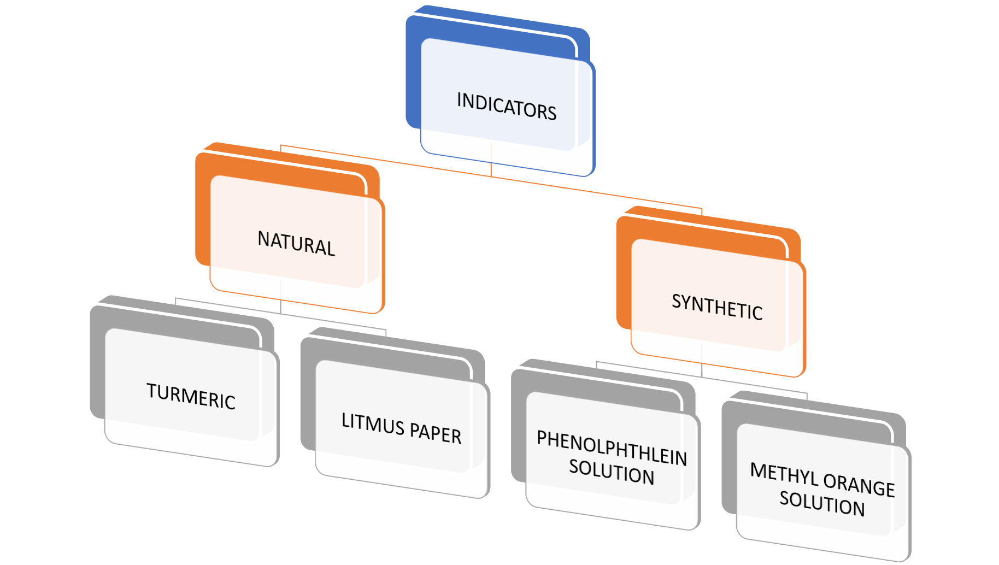

Acids are sour in taste and change the colour of blue litmus to red.
Bases are bitter in taste and change the colour of red litmus to blue .
Indicators tell us whether a substance is acidic or basic by change in colour.
# There are two types of Indicators -:
1. Natural Indicators(Litmus Paper, Turmeric )
2. Synthetic Indicators(Methyl orange solution , Phenolpthalein solution )
